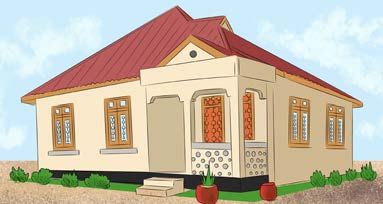
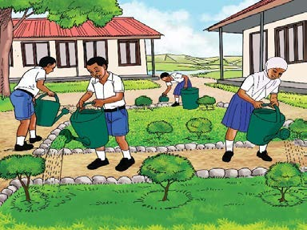
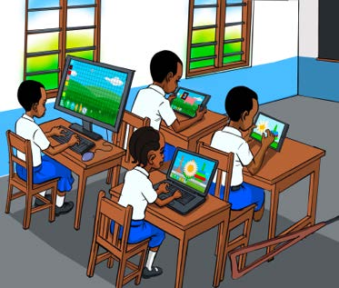
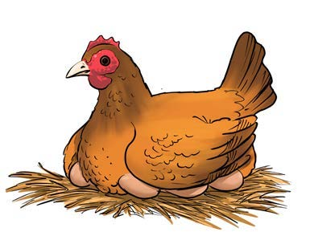
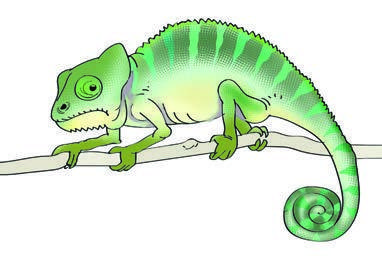
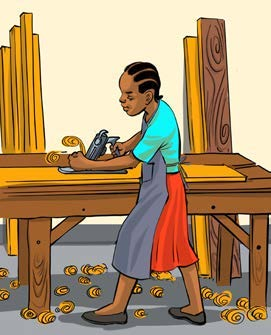

Tazama picha au chunguza mchoro mguso, kisha andika sentensi moja inayoieleza; tumia eneo la kuandikia, kibodi au Breli.

Nyumba safi yenye paa jekundu na maua mbele.Tazama picha au chunguza mchoro mguso, kisha andika sentensi moja inayoieleza; tumia eneo la kuandikia, kibodi au Breli.

Nyumba safi yenye paa jekundu na maua mbele.Tazama picha au chunguza mchoro mguso, kisha andika sentensi moja inayoieleza; tumia eneo la kuandikia, kibodi au Breli.

Wanafunzi wanapalilia bustani ya shule.Tazama picha au chunguza mchoro mguso, kisha andika sentensi moja inayoieleza; tumia eneo la kuandikia, kibodi au Breli.

Wanafunzi wanatumia kompyuta darasani.Tazama picha au chunguza mchoro mguso, kisha andika sentensi moja inayoieleza; tumia eneo la kuandikia, kibodi au Breli.

Kuku wa kahawia amekaa kwenye majani.Tazama picha au chunguza mchoro mguso, kisha andika sentensi moja inayoieleza; tumia eneo la kuandikia, kibodi au Breli.

Kinyonga wa kijani mwenye mkia uliojikunja.Tazama picha au chunguza mchoro mguso, kisha andika sentensi moja inayoieleza; tumia eneo la kuandikia, kibodi au Breli.

Fundi anafanya kazi ya useremala kwenye benchi.